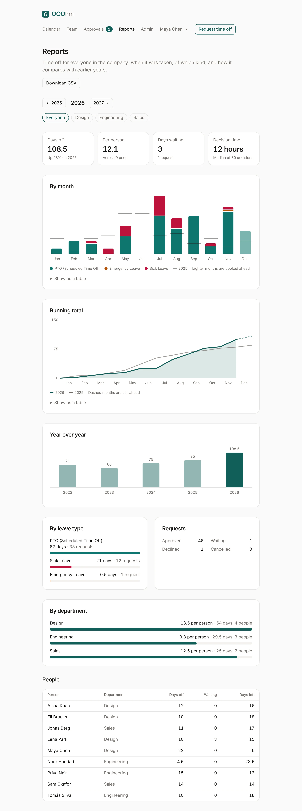

Reports
Reports is for admins and managers. Admins see everyone in the company; a manager sees the people who report to them. Pick a year with the arrows and narrow it to one department with the pills. Download CSV saves the same numbers as a spreadsheet.

| Part | What it shows |
|---|---|
| Days off | Days of time off in the year, and the change on the year before. |
| Per person | The average across the people in the report. |
| Days waiting | Days in requests still waiting for approval, and how many requests. |
| Decision time | The median time from a request to its decision. |
| By month | Days off each month, stacked by leave type, with a line for the same month last year. Months still ahead are lighter: that's time off already booked. |
| Running total | Days off so far this year against last year. The dashed part is booked time off still ahead. |
| Year over year | Each year's total, this year highlighted. |
| By leave type | Days and requests per leave type. |
| Requests | How many were approved, declined, are waiting, or were cancelled. |
| By department | Days per person in each department. |
| People | Each person's days off, days waiting, and days left. |
Each chart has Show as a table for the numbers behind it, which also works with a screen reader.